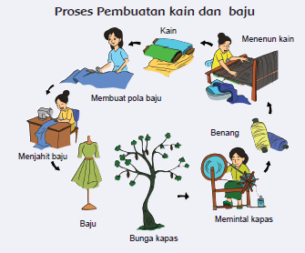

Pembelajaran 5
Tahukah Kamu ?
Ibuku adalah seorang penjahit busana. Ia menjahit busana yang akan digunakan oleh seseorang. Langkah-langkah untuk membuat busana adalah membuat pola baju, memotong pola, dan menjahitnya.
Ibuku harus memiliki pengetahuan mengenai pemilihan bahan yang cocok untuk busana tertentu. Ibuku juga harus kreatif untuk mendesain pakain yang cocok untuk seseorang. Selain itu, Ibuku pun membutuhkan ketelitian untuk menjahit pakaian dengan rapi.
1. Apa produk yang dihasilkan dari pekerjaan Ibu Lani?
2. Termasuk jenis pekerjaan apakah yang dihasilkan Ibu Lani?
3. Apa saja yang harus dikerjakan oleh penjahit busana?
4. Sikap apa yang bisa dicontoh dari penjahit busana?
Menarik bukan, pekerjaan ibuku? Menjadi seorang penjahit busana merupakan pekerjaan yang membutuhkan kreativitas tinggi dan ketekunan.
Ibuku mengolah kain agar bisa menjadi baju. Tahukah kamu bagaimana proses pembuatan kain dan baju?

Jelaskan teknologi yang digunakan dalam proses pembuatan kain!
Jelaskan proses pembuatan baju, seperti gambar di atas!
Bagaimana kegiatan ekonomi pada proses pembuatan baju di atas?
Ternyata untuk membuat kapas menjadi baju yang kita pakai. Prosesnya sangat
panjang. Bagaimana cara menghargai baju yang kita gunakan?
Sebagai seorang penjahit busana, ibuku harus banyak mengetahui jenis-jenis kain dan karakteristiknya. Karena itulah, ibuku sering berkunjung ke museum tekstil untuk menambah pengetahuannya tentang kain.
Museum Tekstil Jakarta dibangun pada awal abad ke-19. Gedung ini pada awalnya, adalah tempat tinggal warga Prancis yang kemudian menjadi Markas Besar Barisan Keamanan Rakyat pada era penjajahan. Gedung tersebut menjadi museum untuk pertama kali pada tanggal 28 Juni 1976 atas prakarsa Ibu Tien Soeharto.
Museum Tekstil Jakarta dibangun pada awal abad ke-19. Gedung ini pada awalnya, adalah tempat tinggal warga Prancis yang kemudian menjadi Markas Besar Barisan Keamanan Rakyat pada era penjajahan. Gedung tersebut menjadi museum untuk pertama kali pada tanggal 28 Juni 1976 atas prakarsa Ibu Tien Soeharto.
Museum Tekstil juga menampilkan koleksi tekstil modern karya perancang busana terkemuka. Hal itu dilakukan sebagai upaya untuk terus mengembangkan pertekstilan Indonesia.
1. Dimanakah letak museum tekstil?
2. Apa koleksi yang dimiliki oleh museum tekstil?
3. Apa manfaat museum tekstil?
Dari Museum Tekstil ibuku semakin mendapatkan banyak informasi tentang jenis - jenis kain.
Kali ini ibuku mendapatkan pesanan untuk membuat baju langganannya. Kain di bawah ini digunakan untuk pakaian pesanannya.
1. Bentuk apakah yang kamu lihat pada corak kain di atas?
2. Apakah corak yang ada pada kain, berulang (berpola)?
Corak kain yang berulang-ulang dinamakan pola geometri.
Nah, sekarang dari motif dua kain berikut, mana yang termasuk pola geometri dan mana yang bukan?
Berikut adalah contoh lain dari pola geometri.